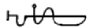

|

When the sun entereth the Sign of the Ram and the time of night is upon ye turn thy face to the North wind and read the verse aloud: Iah ! SHUB-NIGGURATH ! Great Black Goat of the.Woods,
Cast the perfumes upon the coals, trace the sigil of Blaesu and pronounce the words of power:  ZARIATNATMIX, JANNA, ETITNAMUS, And then the Black one shall come forth unto thee and the thousand Horned Ones who howl shall rise up from the Earth. And thou shalt hold before them the talisman of Yhe upon which they shall bow to thy power and answer thy demands. When thou would banish those that you have called forth intone the words: IMAS, WEGHAYMNKO, QUAHERS, XEWEFARAM Which closeth the Gate, and seal with the sign of Koth.
|
 o Summon Shub-Niggurath Ye Black
o Summon Shub-Niggurath Ye Black
 here the
stones have been set up thou shalt call out to Shub- Niggurath, and unto
he that knoweth the signs and uttereth the words all earthly pleasures
shall be granted.
here the
stones have been set up thou shalt call out to Shub- Niggurath, and unto
he that knoweth the signs and uttereth the words all earthly pleasures
shall be granted.
 Adjuration of Great
Cthulh Adjuration of Great
Cthulh |
Call
Forth Yog-Sothoth  |